摘要
现代全模态、语音或 TTS 模型处理一个请求时，已经不再只是执行单个自回归循环。请求会经过模态编码器、思考器（thinker）、说话器（talker）和流式声码器等异构阶段；这些阶段在瓶颈资源、常驻状态和延迟容忍度上各不相同。我们把这些阶段如何分组到进程、如何复制以及如何放置到设备上的方案称为执行策略。
我们认为，执行策略对服务性能的影响与任何单个阶段的执行效率同样显著，而且它不应由模型架构直接决定。SGLang-Omni 将执行策略表示为部署时配置，即阶段—进程—GPU（Stage–Process–GPU，SPG）拓扑，并将其与三项可测量特征关联起来：依赖关系的同步粒度、各阶段的瓶颈资源，以及各阶段的常驻状态大小。反馈耦合融合、进程分组、跨 GPU 与同 GPU 复制、编码器—预填充—解码解耦，以及阶段卸载，都可以用这一套表示统一描述；同一个运行时无需针对模型修改，就能实现所有这些方案。
引言
多阶段解码正在成为文本之外生成模型的主流执行方式。一个请求不再只运行单个自回归循环，而会经过多个模块。模块是由模型架构声明的计算单元，每个模块都保存自己的运行时状态，例如 KV 缓存、反馈缓冲区或累积窗口。
全模态模型会把语音生成拆分为自回归思考器、从辅助头接收逐步反馈的说话器，以及流式声码器；TTS 模型会交错执行较慢的语义解码器和较快的声学解码器；统一多模态模型可能让一个请求同时经过自回归模块和扩散模块。即使在同一种架构内部，各模块的主要瓶颈、常驻状态和延迟容忍度也不同。
包括 SGLang 在内的 LLM 服务引擎，都围绕单一解码循环构建，并通过连续批处理、分页 KV 缓存和前缀复用进行优化。多阶段解码打破了这一假设。服务系统现在必须把模块或模块中的某个阶段组合成阶段（stage），也就是调度计算的基本单元；还必须决定每个阶段的调度策略、放置位置、并行方式和内存预算。我们把这些决策统称为执行策略。模型架构只声明一次模块，而执行策略是部署时决策，在单循环服务中没有对应概念。
本文介绍 SGLang-Omni 如何表示并实现执行策略：
- 计算特征：识别阶段及其依赖关系的三项可测量属性，用于预测合适的执行策略。
- SPG 拓扑：引入一种独立于模型计算的部署表示，用来指定进程分组、复制、张量并行和放置位置。
- 运行时：介绍能够实现任意 SPG 拓扑的运行时，包括统一接口后的逐阶段调度器、反馈耦合执行、放置感知通信和经过验证的逐阶段内存预算。
背景：多阶段生成模型
我们以 Qwen3-Omni 为贯穿全文的示例（图 1）。一个语音请求会经过以下阶段：
- 主机侧预处理；
- 图像和音频编码器；
- 生成文本响应的 30B-A3B MoE 思考器；
- 将响应转换为语音编解码 token 的说话器；
- 合成波形的流式声码器
code2wav。
另有一个独立的 decode 阶段负责将文本输出反分词。
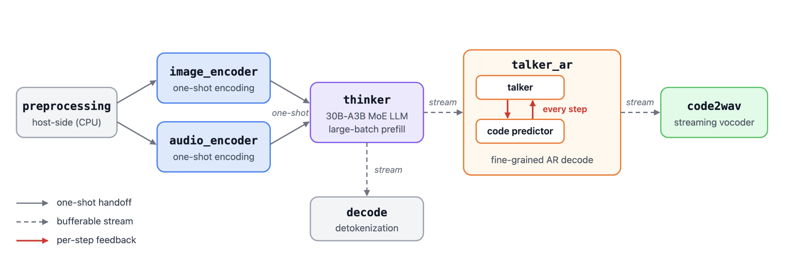
图 1：Qwen3-Omni 阶段图。
一个模块会在一个或多个**阶段（phase）**中执行。每个 phase 都以固定单位推进，例如每个文本 token、每个编解码帧、每个波形窗口，或一次性完成。模块之间的依赖分为三种同步粒度：
- 一次性交接：生产者一次性发送完整载荷。例如，思考器接收编码器 embedding。
- 可缓冲流：生产者发送有序的数据块序列，消费者可以缓冲这些数据块。例如，说话器向声码器流式发送编解码帧。
- 逐步反馈：生产者必须等待消费者完成当前步骤，才能开始下一步。在 Qwen3-Omni 中，每个说话器步骤生成一帧的第一个码本，代码预测器生成其余码本；得到的 embedding 会反馈到下一次说话器步骤。
动机：由架构直接转写执行方案的问题
现有服务系统通常直接从模型架构推导执行策略：架构声明的模块及其全部 phase 会直接成为部署阶段。这些系统的主要区别只是转写粒度不同（图 2）。
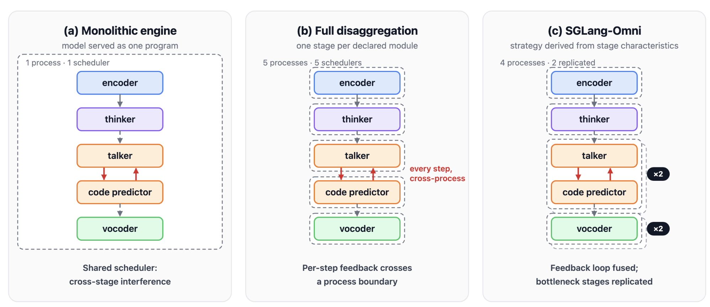
图 2：由架构直接转写的执行策略。
单体引擎在一个调度器下把整个模型作为单个程序服务。不同瓶颈的模块会争用同一套批处理决策。在 Qwen3-Omni 中，大批量思考器预填充会推迟延迟敏感的说话器首帧，而说话器的轻量步骤又会切碎思考器批次。
完全解耦的阶段图把每个模块变成独立阶段，各自拥有引擎和调度器，从而消除模块间干扰。但模型中的模块边界会直接变成部署中的服务边界，每个模型都采用相同策略。逐步反馈或实时数据流依赖会跨越调度器边界，因此每一步都要付出同步、序列化和传输成本。若想重新组合紧密耦合的模块，必须修改服务系统，而不能只调整配置。
声明式编排框架允许任意组合模块，但分组决策完全交给用户，系统本身不提供指导。
实践中，性能最佳的策略往往会从两个方向偏离模型架构：
- 融合：执行策略可以合并架构中彼此独立的模块。Qwen3-Omni 的说话器和代码预测器是两个模块，但把逐步循环作为一条前向路径执行，可以消除每个生成帧的一次跨阶段往返。
- 复制：执行策略可以为架构中只声明一次的模块运行多个实例。经过调优的单个 3B TTS 流水线实例仍会让 GPU 大量空闲，SM 活跃度低于 30%；在同一 GPU 上运行三个完整流水线实例，可使单 GPU 吞吐量大约翻倍。
两种策略都保持模型数据流与输出不变，但都无法通过直接转写架构得到。
计算特征
以下三项可测量特征在很大程度上决定了适合的执行策略：
| 特征 | 定义对象 | 获取方式 | 影响的决策 |
|---|---|---|---|
| 同步粒度 | 模块间依赖 | 解码算法 | 能否在这条依赖上设置阶段边界 |
| 瓶颈资源 | 模块 | 利用率计数器与 GPU 频率缩放检查 | 调度策略，以及增加实例能否利用空闲容量 |
| 常驻状态大小 | 模块 | 模型定义：权重、每 token KV 字节数、激活峰值和流缓冲区 | 内存预算，以及每台设备可容纳的阶段或实例数 |
同步粒度可以预测阶段边界的成本。一次性交接和可缓冲流很少跨越边界，因此分离两端成本较低。逐步反馈则要求每个生成步骤都进行一次跨阶段同步，所以这类耦合模块最好组合在同一阶段中。
瓶颈资源用于区分已经使设备饱和的阶段和受主机侧工作限制的阶段。以 Qwen3-TTS 1.7B 说话器为例，并发数从 1 增加到 16 时，解码步骤的中位墙钟时间从 15.2 ms 增加到 26.9 ms，而 GPU 忙碌时间仅从 6.4 ms 增加到 7.2 ms。在并发 16 时，每一步会启动 155 个内核，GPU 忙碌时间只占步骤墙钟时间约 27%。该阶段受限于内核提交、同步和输出处理，而不是算术计算。
常驻状态大小决定阶段的内存预算，并限制一台设备能容纳多少阶段或实例。
这些特征还会相互作用。受主机侧调度瓶颈限制的模块会让设备大量空闲；如果它的常驻状态又足够小，可以在同一设备上容纳多个副本，就可以通过运行多个实例来利用空闲容量。相反，已经使设备饱和的模块不会从额外实例中获益。
执行策略还会改变底层优化的收益。以并发 16 时 Qwen3-TTS 声码器的 CUDA Graph 为例：当声码器与说话器共享进程时，两次测试中 CUDA Graph 分别将吞吐量提高 7.0% 和 9.7%，并将平均块间延迟降低 10.0% 和 9.4%；当声码器在独立进程中运行时，同一优化基本没有效果。这与声码器的内核启动工作在进程分离后移出说话器关键路径的现象一致。因此，不能脱离执行拓扑单独评估内核级优化。
SPG 拓扑
SGLang-Omni 将多阶段模型的计算与部署分离。阶段图描述局部计算及其依赖，SPG 拓扑则描述阶段如何分组、复制、并行和放置。
阶段与阶段图
阶段是具有计算、局部状态和调度策略的逻辑执行单元。每次调度执行都会接收一组输入，读取并更新阶段状态，再发出一系列输出事件。状态保存跨执行所需的信息，例如请求专属 KV 缓存、反馈或流缓冲区。这一接口同时适用于一次性编码器、自回归解码和增量波形合成。一个阶段可以包含完整模块、模块中的一个 phase（如预填充或解码），或多个紧密耦合的模块。
阶段及其依赖构成有向无环阶段图 G = (S, E)，其中 S 是阶段集合，E 是阶段间的边集合。所有循环都封装在阶段内部。每条边指定一种数据模式和交付契约：它传输完整载荷或有序数据块流；契约则指定消费者何时可以继续以及数据何时可以释放。阶段图还声明入口阶段、终端输出、路由规则和汇合规则：
- 生产者可以把输出投影到多个后继阶段；
- 消费者可以等待多个前驱阶段并合并其载荷；
- 流消费者可以在生产者完成之前开始执行。
部署表示
对于阶段图 G，SPG 拓扑定义为：
T = (G, π, r, q, μ)
其中，π 把各阶段划分到逻辑进程组；每个进程组 ℓ 有 r_ℓ 个副本，每个副本包含 q_ℓ 个协作 rank。因此，物理进程是“进程组 × 某个副本 × 某个 rank”的所有组合；最后，μ 把每个物理进程放置到某台主机以及一个 GPU 或 CPU 上。π、r、q 和 μ 均直接对应配置字段：
| 组成 | 含义 | 配置字段 |
|---|---|---|
π |
将阶段分配到逻辑进程组 | stages.<stage>.process |
r_ℓ |
进程组 ℓ 的副本数 |
processes.<group>.num_replicas |
q_ℓ |
每个副本的张量并行 rank 数 | stages.<stage>.tp_size |
μ |
每个进程所在的主机和设备 | stages.<stage>.gpu、processes.<group>.replica_devices |
因此，进程分组、复制、张量并行和 GPU 共享可以分别指定：
- 一个单 rank 进程组可包含多个共享同一 OS 进程的阶段。
- 张量并行阶段独占一个进程组，每个 rank 对应一个进程。
- 复制会复制整个进程组，因此组内所有阶段的副本数相同，并一起复制。
- 不同副本或不同进程组可以放到同一张 GPU 上。
运行时会在启动 worker 之前完成以下步骤：
- 解析阶段声明和进程成员关系；
- 展开副本；
- 验证放置方案与声明的内存预算；
- 构建通信端点。
路由声明使用阶段的逻辑名称，因此展开副本不需要任何模型专属路由代码。以下配置把 Qwen3-Omni 的语音生成阶段复制到两张 GPU 上，图 3 展示了生成的拓扑。
config_cls: Qwen3OmniSpeechPipelineConfig
model_path: Qwen/Qwen3-Omni-30B-A3B-Instruct
stages:
talker_ar:
gpu_memory_fraction: 0.123
code2wav:
gpu_memory_fraction: 0.014
processes:
talker_ar:
num_replicas: 2
replica_devices: [1, 2]
code2wav:
num_replicas: 2
replica_devices: [1, 2]
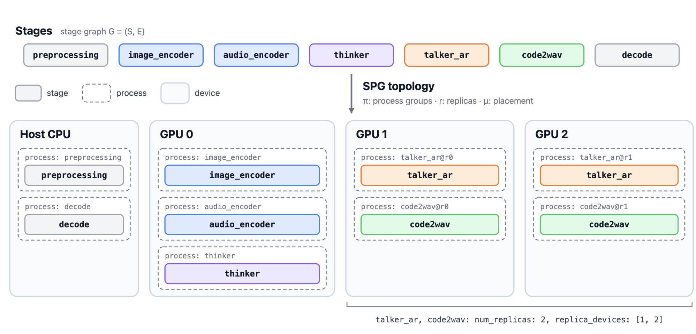
图 3：复制后的 Qwen3-Omni SPG 拓扑。
代表性拓扑
常见执行策略都可以用同一套表示描述，区别只在于阶段如何分组、复制、并行和放置：
| 拓扑 | 配置 | 对应的关键特征 |
|---|---|---|
| 反馈耦合融合 | 耦合模块组成单个阶段 | 逐步反馈 |
| 进程分组 | 多个阶段共享一个进程组 | 低成本进程内交接 |
| 跨 GPU 复制 | 一个进程组在不同 GPU 上拥有多个单 rank 副本 | 设备侧瓶颈 |
| 同 GPU 复制 | 一个进程组在同一 GPU 上拥有多个副本 | 受主机限制且常驻状态较小的阶段 |
| 带 TP 的 EPD 解耦 | 编码、预填充、解码分属不同进程组；预填充和解码内部使用张量并行 | 不同 phase 的调度与并行策略 |
| 带复制的 EPD | 每个 phase 进程组拥有独立的副本数和放置方案 | 各 phase 所需容量不同 |
| 阶段卸载 | 固定拓扑；顺序阶段轮流把权重保留在 GPU 上 | 设备内存容量 |
反馈耦合融合。 对于通过逐步反馈耦合的模块，SGLang-Omni 在单个阶段内表达循环。阶段状态同时保存传给下一步的反馈和自回归状态。模型钩子在三个位置管理反馈：
- 在预填充期间初始化反馈；
- 在下一次前向传播前注入反馈；
- 在主干网络和辅助头执行后更新反馈。
因此，Qwen3-Omni 的说话器与代码预测器作为单个 talker_ar 阶段运行，循环内部不发生阶段间交接。
进程分组。 对于单 rank 阶段，把两个阶段分配到同一进程组，会让它们的实例位于同一进程中，但仍保留各自的计算和调度器；把它们分配到不同组，则允许每个阶段拥有不同的副本数。只要边契约支持所选边界，两种方案都不会改变阶段图。某些边通过进程局部结构交换状态；模型会声明这些边，任何会拆分它们的拓扑都会在编译时被拒绝。进程成员关系是可在启动时覆盖的逐阶段字段。例如，Qwen3-TTS 声码器默认与流水线共享进程，也可以这样隔离：
sgl-omni serve --model-path Qwen/Qwen3-TTS-12Hz-1.7B-Base --vocoder.process vocoder
放置方案也会影响分组。当 Qwen3-Omni 共置在单张 GPU 上时，不同进程会分时使用设备，因此共置配置会让 code2wav 在说话器进程中、以高优先级 CUDA stream 运行。
阶段复制。 每接纳一个请求，协调器都会为请求涉及的每个进程组选择一个副本。绑定关系在请求整个生命周期内保持固定，并决定载荷、数据流、完成和中止处理。因此，同组阶段使用同一副本。多个副本可以放在同一设备上；把进程组的所有副本都放到一张 GPU，就得到同 GPU 复制：
processes:
pipeline:
num_replicas: 2
replica_devices: [0, 0]
sgl-omni serve --config <config.yaml> --mps on --weight-share on
CUDA MPS 允许各副本的 CUDA context 并发执行。兼容副本还可以通过 CUDA IPC 共享不可变权重：leader 副本在 follower 运行期间持有权重分配。KV 缓存、采样器状态、CUDA Graph 和请求缓冲区仍由每个副本私有。共享设备上的每个 GPU 阶段都会声明 gpu_memory_fraction，运行时会在创建进程之前验证每台设备的总和。
EPD 解耦。 编码、预填充和解码可运行在不同进程组中。编码器使用单个 rank，预填充与解码使用相同的张量并行度。编码器输出只转发一次给预填充。当 KV 布局兼容且两个 phase 位于同一主机时，每个预填充 rank 通过 CUDA IPC 把自己的 KV 分片传给对应的解码 rank。TP 集合通信仍限制在各副本内部。
同一张图还支持独立副本数与 GPU 共享。例如，在三张 GPU 上使用单 rank 进程组时，可以这样放置三个编码器副本、一个预填充副本和三个解码副本：
- 三个编码器副本共享 GPU 0；
- 预填充和一个解码副本共享 GPU 1；
- 另两个解码副本共享 GPU 2。
阶段卸载。 假设两个顺序执行的单副本阶段位于同一 GPU，同一时刻只有一个阶段把权重保留在 GPU 上。当执行从第一阶段切换到第二阶段时，第一阶段完成后会把权重卸载到主机内存，第二阶段则在运行前加载权重。只有权重驻留位置发生变化；拓扑与请求绑定保持不变。KV 缓存仍驻留在 GPU 上，并继续计入内存预算。
运行时设计
运行时通过四层结构实现 SPG 拓扑：Coordinator → Stage → Scheduler → ModelRunner（图 4）。
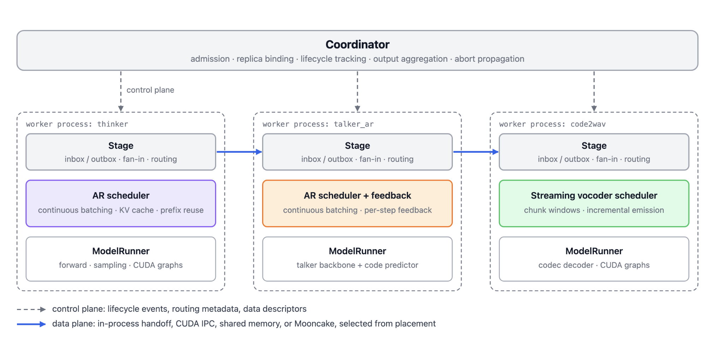
图 4：SGLang-Omni 运行时分层。
- Coordinator 建立请求的副本绑定
β_a并跟踪请求生命周期；它还聚合终端输出、解析客户端响应或流，并传播中止信号。 - Stage 处理就绪判断、输入组装和沿
E的通信。所有阶段都暴露相同的调度器收件箱/发件箱接口，用于传输请求、流数据块、完成信号、结果和错误。 - Scheduler 管理自己的队列和批次。
- ModelRunner 实现阶段计算
F_s，包括前向执行、采样、钩子和输出转换。
得益于这种分层，改变进程分组不会合并组内阶段的调度策略。在执行契约固定时，改变 (π, r, μ) 仍会复用实现 F_s 的同一个 ModelRunner。例如，EPD 会增加阶段交接和预填充/解码调度，但解码仍调用现有的、支持 CUDA Graph 的 ModelRunner；增加解码副本只是在更多 worker 中实例化同一个 runner。因此，拓扑变化可以继承模型专属执行优化，无需为每种部署单独实现。
异构调度
每种阶段类型都采用适合其工作负载的调度策略：
- 自回归阶段复用 SGLang 的连续批处理、KV 缓存管理和前缀复用，还可以通过单步前瞻异步解码，将主机侧结果处理与下一次解码步骤重叠。阶段输入被转换为调度器请求，阶段间流式传输和请求记账则留在 ModelRunner 之外。
- 编码器、预处理和其他非自回归阶段直接执行，并可选择在本地组成批次。
- 流式声码器维护每个请求的合成状态，并将编解码数据块累积为可执行窗口。它们增量输出波形片段，并在流完成时刷新剩余数据。
这些策略决定何时调用 F_s 以及如何形成输入 I_s，而状态 x_s 则保存阶段中每个请求的状态。
放置感知通信
阶段间通信分为控制面和数据面。控制面承载请求生命周期事件、路由元数据和数据描述符；数据面通过与后端无关的中继接口传输张量缓冲区。在使用中继的交接中，生产者发布数据及其描述符，消费者在接纳依赖任务前使用描述符获取数据。
对于边 u → v，其端点进程为 p 和 p'，传输方式根据端点局部性和数据兼容性选择：
| 端点关系 | 数据移动方式 |
|---|---|
p = p' |
直接对象交接 |
p ≠ p'，但位于同一设备，且数据符合条件 |
对符合条件的 GPU 张量直接使用 CUDA IPC |
| 位于同一主机 | 对支持的 GPU 传输使用池化 CUDA IPC；CPU 张量或回退路径使用共享内存 |
| 位于不同主机 | 通过已配置的远程端点使用 Mooncake 中继 |
每条路径都保持就绪语义、流顺序和数据生命周期。后端专属的所有权与完成跟踪决定何时回收缓冲区。因此，改变 μ 会改变传输方式，但保持边集合 E 和副本绑定 β_a 不变。
保持请求语义
正确性来自三个不变量：
- 局部执行实现
F_s。 - 请求状态始终留在
β_a选定的副本上。 - 通信保持
E中定义的契约。
对于转移语义固定的已完成请求（包括采样选择），可以对因果有序的执行事件进行归纳：每个消费者都会收到所需的前驱数据，并推进对应状态。因此，终端阶段产生的每项输出数据序列与逻辑阶段图一致。只要阶段实现满足上述不变量，即使批处理、放置位置和交付时间发生变化，这一结论仍成立。
评测与性能
我们在 18 个模型上对比 SGLang-Omni 与另外三个开源全模态和语音服务引擎（记为 OSS 1、OSS 2、OSS 3）：包括 10 个文本转语音模型、6 个语音识别模型和 2 个全模态模型。每个引擎都以自己的服务端和开箱即用设置服务其支持的模型，在同一张 H200 上由同一个 HTTP 客户端驱动。每张图中，SGLang-Omni 都是最左侧柱；其他引擎的顺序和颜色会按模型打乱，红色叉号表示该引擎不支持该模型。
文本转语音模型吞吐量
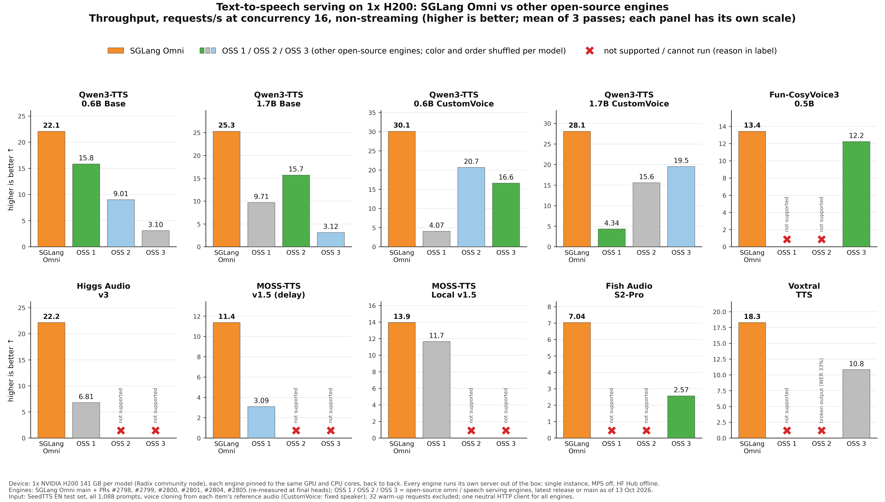
文本转语音模型首音频时间
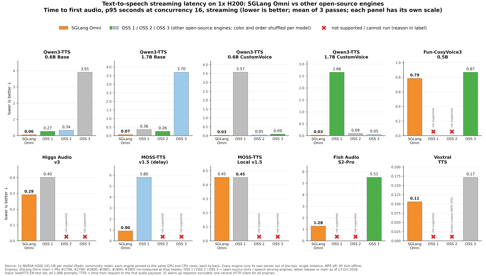
文本转语音模型质量
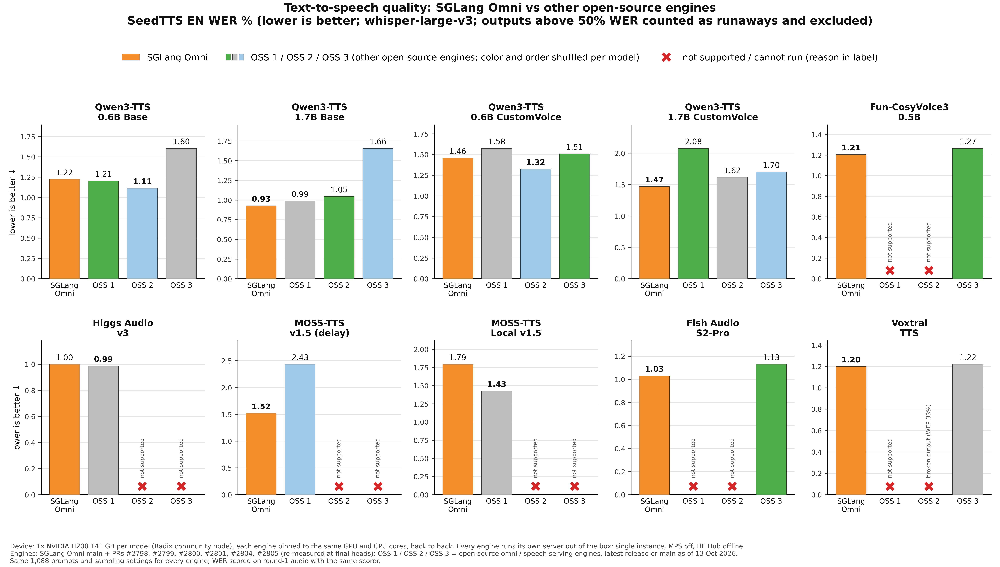
语音识别模型吞吐量
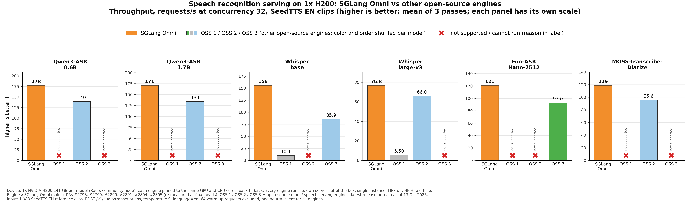
语音识别模型质量
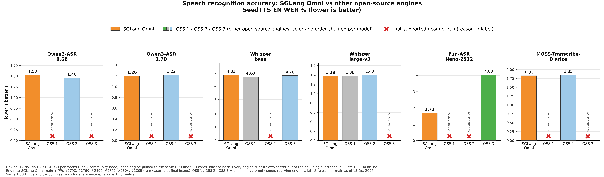
全模态模型在语音工作负载上的吞吐量
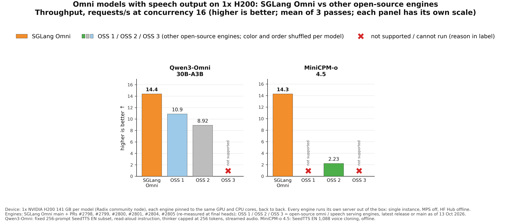
全模态模型在语音工作负载上的首音频时间
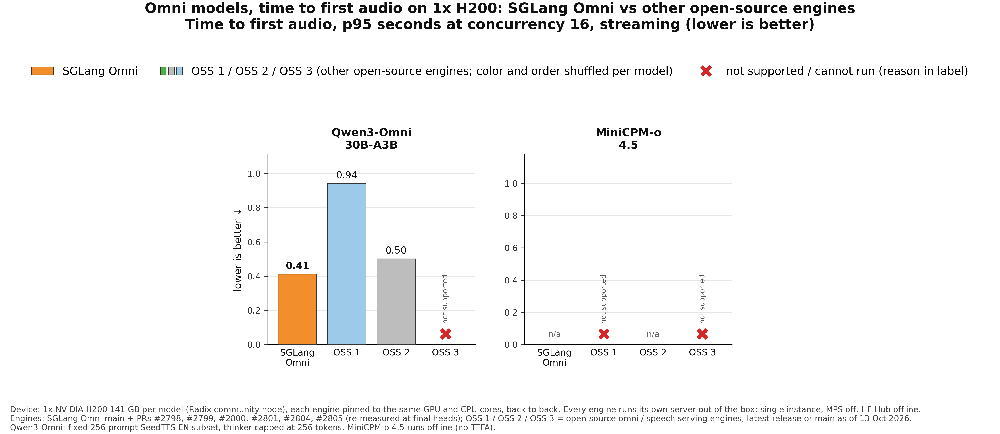
SGLang-Omni 在对比中的每个模型上都实现最高吞吐量：
| 类别 | 模型数 | 相比其他引擎中最快者的吞吐量 |
|---|---|---|
| 文本转语音，并发 16 | 10 | 1.10× 至 3.68×（Higgs Audio v3 为 3.26×，MOSS-TTS v1.5 为 3.68×，Fish Audio S2-Pro 为 2.74×，Qwen3-TTS 为 1.40× 至 1.61×） |
| 语音识别，并发 32 | 6 | 1.16× 至 1.81× |
| 带语音输出的全模态模型，并发 16 | 2 | Qwen3-Omni 为 1.32×，MiniCPM-o 4.5 为 6.41× |
并发 16 时的流式首音频时间（p95）在 10 个文本转语音模型中的 9 个上最低，并在 MOSS-TTS Local 上持平（均为 0.45 秒）；Qwen3-Omni 上也更低（0.41 秒对 0.50 秒）。输出质量相当：除一个模型外，所有模型的 SeedTTS WER 与其他引擎中的最佳值相差不超过 0.15 个百分点。例外是 MOSS-TTS Local（1.79% 对 1.43%）；我们的输出与官方参考实现一致，而另一引擎的说话人相似度低约 10 个百分点。
以上结果均来自每张 GPU 单实例。下文介绍的同 GPU 复制拓扑还能进一步提升这些数字：在一张 H200 上运行三个 Qwen3-TTS 1.7B 流水线副本，并发 96 时，流式吞吐量是单实例的 1.60 倍；三个 CosyVoice3 副本在并发 48 时，非流式吞吐量是单实例并发 16 时的 2.05 倍。
方法与复现
| 设置 | 值 |
|---|---|
| 硬件 | 每个模型使用一张 NVIDIA H200（141 GB）；所有引擎依次运行在同一张 GPU 和相同的固定 CPU 核上 |
| 服务 | 每个引擎使用自有服务端和默认配置，单实例，关闭 CUDA MPS；权重下载后让 Hugging Face Hub 离线 |
| 版本 | SGLang-Omni 使用截至 2026 年 10 月 14 日的 main，包含 PR #2798、#2799、#2801、#2804、#2805，以及 PR #2800；其他引擎使用截至 10 月 13 日的最新发行版或 main |
| 文本转语音 | SeedTTS EN 全部 1,088 条提示；使用每条数据的参考音频克隆声音（CustomVoice 检查点使用固定说话人）；非流式测吞吐量、流式测 TTFA，并发均为 16；排除 32 个预热请求 |
| 语音识别 | 通过 /v1/audio/transcriptions 处理 1,088 条 SeedTTS EN 参考音频，temperature 为 0，并发 32；排除 64 个预热请求 |
| 全模态 | Qwen3-Omni：固定 256 条 SeedTTS EN 子集，朗读指令，思考器最多 256 token，流式音频。MiniCPM-o 4.5：SeedTTS EN 1,088 条声音克隆，离线处理 |
| 统计 | 三次运行的平均值；第一次运行使用 whisper-large-v3 评估质量；WER 超过 50% 的输出视为失控并排除 |
对比使用一个与引擎无关的 HTTP 客户端。对于文本转语音和全模态模型，SGLang-Omni 仓库中的基准脚本可以在约 6% 误差范围内复现 SGLang-Omni 结果：
git clone https://github.com/sgl-project/sglang-omni.git && cd sglang-omni
uv pip install --prerelease=allow -v -e .
python -m benchmarks.dataset.prepare --dataset seedtts
# 文本转语音，例如 Qwen3-TTS 1.7B Base
sgl-omni serve --model-path Qwen/Qwen3-TTS-12Hz-1.7B-Base --port 8000
python -m benchmarks.eval.benchmark_tts_seedtts \
--meta zhaochenyang20/seed-tts-eval-arrow \
--model Qwen/Qwen3-TTS-12Hz-1.7B-Base --port 8000 \
--lang en --max-concurrency 16
# 语音识别，例如 Qwen3-ASR 1.7B
sgl-omni serve --model-path Qwen/Qwen3-ASR-1.7B --port 8000
python -m benchmarks.eval.benchmark_asr_seedtts \
--port 8000 --concurrencies 32 --repeats 3 --warmup
# 全模态：Qwen3-Omni
sgl-omni serve --model-path Qwen/Qwen3-Omni-30B-A3B-Instruct --port 8000
python -m benchmarks.eval.benchmark_omni_seedtts \
--meta zhaochenyang20/seed-tts-eval-arrow \
--model qwen3-omni --port 8000 \
--max-concurrency 16 --max-samples 256
每个脚本顶部的使用说明涵盖其他模型，包括 Higgs Audio 和 MOSS-TTS 的参考格式，以及 Voxtral 的说话人预设。权重缓存后请设置 HF_HUB_OFFLINE=1，确保所有引擎在服务期间都不会访问 Hugging Face Hub。
致谢
我们用了半年多时间让 SGLang Omni 重新焕发生机。感谢一路帮助我们的所有人。
SGLang Omni 团队：Chenyang Zhao、Jingwen Gu、Shenggui Li、Richard Wang、Yichi Zhang、Xuesong Ye、Jiaxin Deng、Ratish P、Jiaxuan Luo、Xinyu Lu、Wenyao Gao、Ao Sun、Jintao Qu、Kaige Li、Yuhao Chen、Yuhan Zhou、Xuxiang Tian、Ruoyi Zhang、Junnan Li、Yixiao Zeng、Chenchen Hong、Shenggui Li
Moss AI 团队：Yang Gao、Chaoye Fei、Yitian Gong、Chen Yang、Yiyang Zhang、Xipeng Qiu
Boson AI 团队：Huapeng Zhou、Silin Men、Ke Bai、Dongming Shen、Mu Li、Alex Smola
FishAudio 团队：Shidong Li、Xuehao Yang、Shijia Liao
原文交互图实验室
这里保留了原文的原生交互控件，可使用上方菜单切换图表，并操作播放、时间轴、场景按钮或曲线开关。